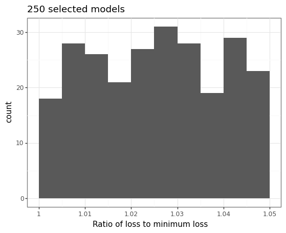
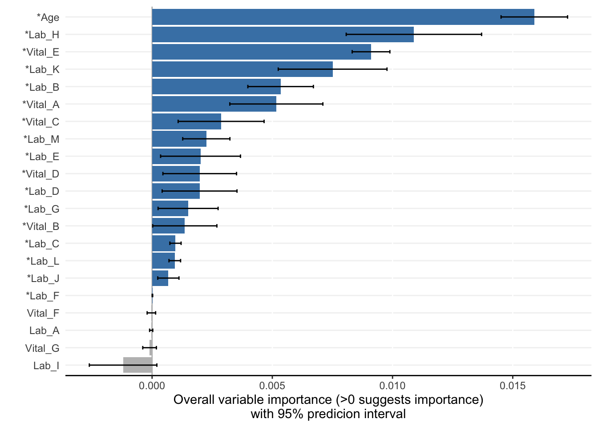
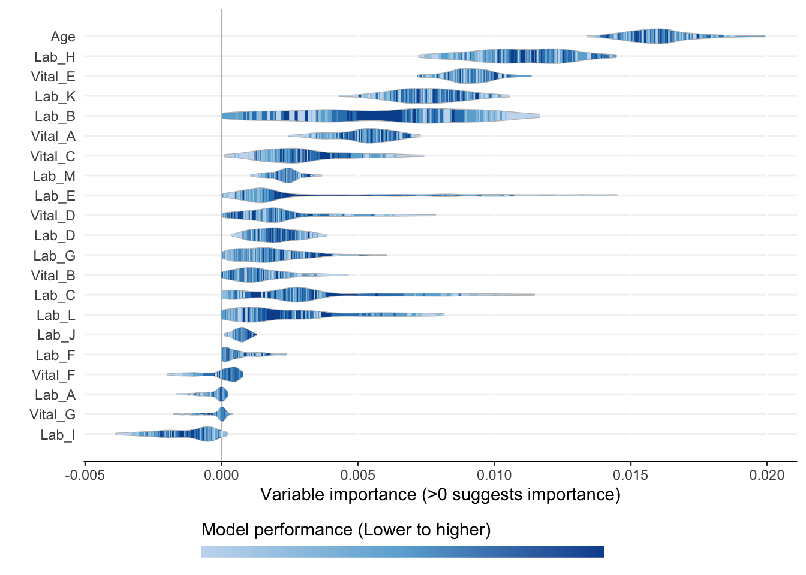
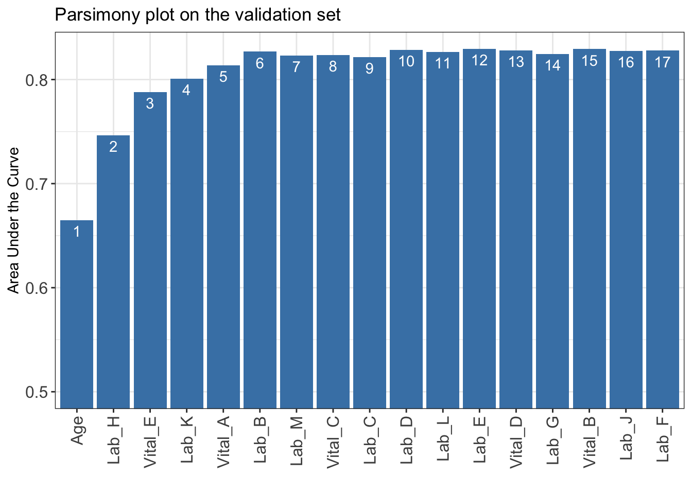

library(AutoScore)
data("sample_data")
names(sample_data)[names(sample_data) == "Mortality_inpatient"] <- "label"
check_data(sample_data)Data type check passed. No NA in data dim(sample_data)[1] 20000 22This chapter provides a fully reproducible example to demonstrate in detail the use of the AutoScore-ShapleyVIC workflow, using a simulated dataset with binary outcome available from the AutoScore package. The data is described in detail in the AutoScore Guidebook.
This part of the workflow is implemented in R.
sample_data from the AutoScore package.label.library(AutoScore)
data("sample_data")
names(sample_data)[names(sample_data) == "Mortality_inpatient"] <- "label"
check_data(sample_data)Data type check passed. No NA in data dim(sample_data)[1] 20000 22sample_data$label <- as.numeric(sample_data$label == "TRUE")
head(sample_data) Vital_A Vital_B Vital_C Vital_D Vital_E Vital_F Vital_G Lab_A Lab_B Lab_C
1 87 143 78 101 13 35.7 99 160 13.0 23
2 43 133 64 83 20 36.1 95 116 15.3 24
3 80 115 48 72 23 37.4 99 133 8.0 27
4 106 121 68 84 16 37.6 99 206 12.1 25
5 86 135 70 83 24 37.2 96 100 18.1 26
6 69 123 72 88 16 36.5 95 204 19.9 20
Lab_D Lab_E Lab_F Lab_G Lab_H Lab_I Lab_J Lab_K Lab_L Lab_M Age label
1 0.0 105 34 12 0.8 98 4.4 0 136 16 66 0
2 0.8 108 36 12 0.6 322 4.3 55 141 17 79 0
3 1.3 111 30 11 2.9 0 4.4 40 142 0 86 0
4 0.0 102 39 14 3.0 214 4.4 0 134 6 69 0
5 2.3 96 36 13 2.7 326 3.8 20 134 26 65 0
6 2.5 101 31 10 0.8 103 4.2 38 138 14 68 0set.seed(4)
out_split <- split_data(data = sample_data, ratio = c(0.7, 0.1, 0.2))
train_set <- out_split$train_set
dim(train_set)[1] 14000 22validation_set <- out_split$validation_set
dim(validation_set)[1] 2000 22test_set <- out_split$test_set
dim(test_set)[1] 4000 22output_dir for ShapleyVIC, using train_set as training set and validation_set as the explanation data.output_dir <- "mort_output"
if (!dir.exists(output_dir)) dir.create(output_dir)
write.csv(train_set, file = file.path(output_dir, "train_set.csv"),
row.names = FALSE)
write.csv(validation_set,
file = file.path(output_dir, "validation_set.csv"),
row.names = FALSE)This part of the workflow is implemented in Python.
import os
import pandas as pd
output_dir = "mort_output"
dat_train = pd.read_csv(os.path.join(output_dir, 'train_set.csv'))
dat_expl = pd.read_csv(os.path.join(output_dir, 'validation_set.csv'))
y_name = 'label'
from ShapleyVIC import model
model_object = model.models(
x=dat_train.drop(columns=[y_name]), y=dat_train[y_name],
# No need to specify x_names_cat because all variables are continuous
outcome_type="binary", output_dir=output_dir
)u1 and u2.u1, u2 = model_object.init_hyper_params(m=200)
(u1, u2)(0.5, 15.625)model_object.draw_models(u1=u1, u2=u2, m=500, n_final=250, random_state=1234)
model_object.models_plot

from ShapleyVIC import compute
m_svic = compute.compute_shapley_vic(
model_obj=model_object,
x_expl=dat_expl.drop(columns=[y_name]), y_expl=dat_expl[y_name],
n_cores=25, # running on a PC with 40 logical processors
threshold=0.05
)This part of the workflow is implemented in R.
library(ShapleyVIC)
model_object <- compile_shapley_vic(
output_dir = output_dir, outcome_type = "binary"
)model_plots <- plot(model_object)

ranking <- rank_variables(model_object, summarise = TRUE, as_vector = TRUE)
ranking Age Lab_H Vital_E Lab_K Vital_A Lab_B Lab_M Vital_C Lab_C Lab_D
1.000 2.116 3.028 4.104 5.588 5.744 8.904 8.940 9.084 9.704
Lab_L Lab_E Vital_D Lab_G Vital_B Lab_J Lab_F
10.120 10.268 11.628 12.952 13.220 13.328 16.052 AUC <- AutoScore_parsimony(
train_set = train_set, validation_set = validation_set,
rank = ranking, max_score = 100, n_min = 1, n_max = length(ranking)
)Select 1 Variable(s): Area under the curve: 0.6649
Select 2 Variable(s): Area under the curve: 0.7466
Select 3 Variable(s): Area under the curve: 0.7881
Select 4 Variable(s): Area under the curve: 0.8009
Select 5 Variable(s): Area under the curve: 0.8137
Select 6 Variable(s): Area under the curve: 0.8268
Select 7 Variable(s): Area under the curve: 0.8232
Select 8 Variable(s): Area under the curve: 0.8234
Select 9 Variable(s): Area under the curve: 0.8215
Select 10 Variable(s): Area under the curve: 0.8286
Select 11 Variable(s): Area under the curve: 0.8267
Select 12 Variable(s): Area under the curve: 0.8294
Select 13 Variable(s): Area under the curve: 0.8281
Select 14 Variable(s): Area under the curve: 0.8246
Select 15 Variable(s): Area under the curve: 0.8293
Select 16 Variable(s): Area under the curve: 0.8275
Select 17 Variable(s): Area under the curve: 0.8278
cut_vec <- AutoScore_weighting(
train_set = train_set, validation_set = validation_set,
final_variables = names(ranking)[1:6], max_score = 100
)****Included Variables:
variable_name
1 Age
2 Lab_H
3 Vital_E
4 Lab_K
5 Vital_A
6 Lab_B
****Initial Scores:
======== ========== =====
variable interval point
======== ========== =====
Age <35 0
[35,49) 7
[49,76) 17
[76,89) 23
>=89 27
Lab_H <0.2 0
[0.2,1.1) 4
[1.1,3.1) 9
[3.1,4) 15
>=4 18
Vital_E <12 0
[12,15) 2
[15,22) 7
[22,25) 12
>=25 15
Lab_K <8 0
[8,42) 6
[42,58) 11
>=58 14
Vital_A <60 0
[60,73) 1
[73,98) 6
[98,111) 10
>=111 13
Lab_B <8.5 0
[8.5,11.2) 4
[11.2,17) 7
[17,19.8) 10
>=19.8 12
======== ========== =====
***Performance (based on validation set):
AUC: 0.8268 95% CI: 0.7953-0.8583 (DeLong)
Best score threshold: >= 57
Other performance indicators based on this score threshold:
Sensitivity: 0.8065
Specificity: 0.6775
PPV: 0.1736
NPV: 0.9766
***The cutoffs of each variable generated by the AutoScore are saved in cut_vec. You can decide whether to revise or fine-tune them